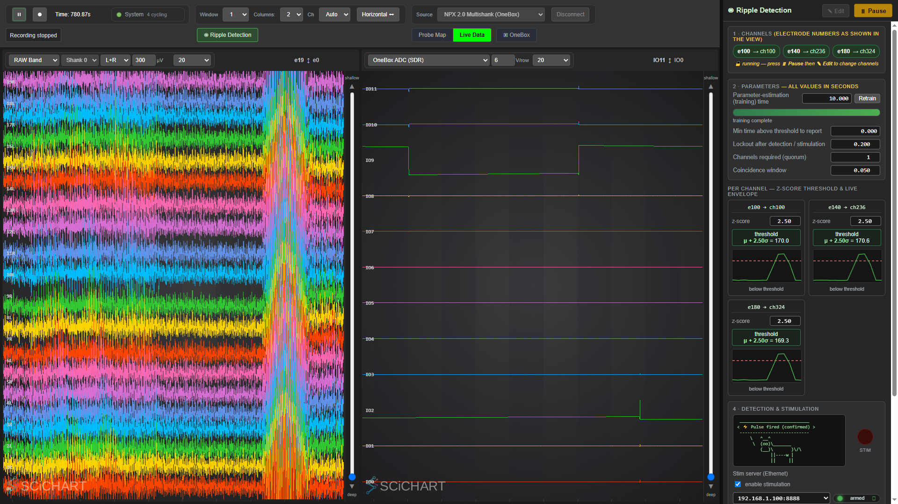

Ripple (sharp-wave-ripple / SWR) detection — how it works + how to validate it#
The detector (proc.rippledetector, src/modules/swr/RippleDetector.cpp) fires when a hippocampal-ripple-band
envelope crosses a z-score threshold. It is validated on both NP1.0 and NP2.0 — first in simulation
(2026-07-07, SpikesPeak_Status.md §20) and now end-to-end on real hardware in saline driving the full
closed loop (synthetic ripple → detection → Pi/AM 2300 → NI-DAQ ai4 on PXIe, or the OneBox's own ADC on a
OneBox), sub-millisecond with ASAP delivery, on both transports. Results:
../RecordingTests/CLOSED_LOOP_LATENCY.md. Saline bench
validation is done, and the in-vivo milestone this page used to point at came round on 2026-08-28
(SpikesPeak_Status.md §65 — which records the morning's pre-session findings, not the session's own
results). For where things stand, read the Status log, not this paragraph.
The three ripple docs (read the right one)#
To keep content in one place, the ripple documentation is split by audience — this doc does not repeat the other two:
| Doc | Owns |
|---|---|
| this doc | the detection algorithm, the per-probe data path, config keys, and offline validation |
RippleGui.md |
the GUI ↔ backend WS command/event contract (frontend/backend tables, the rippleState sync rule, stim-pulse preview, arm/disarm) |
../user_docs/RippleDetection.md |
the user guide — how to operate the dock (pick channels, train, tune z live, read the columns, troubleshoot) |
The full closed loop running on an NP1 sim — LFP streaming into the detector (left) with two trained channels (e80, e160) and a confirmed fire in the dock (right):

(Captured live over CDP from the Simulated NPX 1.0 + Ripple Detection source; the GUI is identical for a
real probe. Step-by-step operation is in the user guide above.)
The data path — the detector runs DIFFERENTLY per probe#
The detector processes the LFP band at 2.5 kHz (its ripple-band FIR + envelope filters are designed for 2.5 kHz). Its input band, type, and decimation are config-driven, so it runs differently per probe:
NP1: data.npx.lfp (int16, 2.5 kHz, native) ───────────────────► proc.rippledetector (decimation 1)
NP2: data.npx.raw (int16, 30 kHz) ─► proc.lfp ─► data.lfp ─────► proc.rippledetector (decimation 12)
(anti-alias low-pass, float 30 kHz)
- NP1 reads the native
data.npx.lfpDIRECTLY (int16 → cast channel 0 to float),decimation_factor: 1. Noproc.lfp. Ripples live in the LFP band; the AP band must NOT be used — a real 1.0 probe high-passes AP (~300 Hz), attenuating the 150-250 Hz ripple. Reading the native LFP directly (one cast, no extra thread hop, no filter) is also the low-latency closed-loop path. - NP2 has only the 30 kHz wideband
data.npx.raw, soproc.lfplow-passes it (Bessel −3 dB @ 400 Hz — the anti-alias filter, required before decimation, else 300 Hz-10 kHz spikes fold into the ripple band) →data.lfp(float, 30 kHz), and the detector decimates ÷12 → 2.5 kHz (÷12, not ÷10, to land exactly on NP1's native 2.5 kHz rate). - Detector chain (both): ripple-band FIR (
RippleBandFilterCoefficients2_5kHz, 150-250 Hz) → rectify → envelope (EnvelopeFilter2_5kHz) → fire when envelope >mean + z·stdwith a lockout. Filter taps + z / latency tradeoffs follow Dutta et al. 2018 JNE (cited in the code). Detection electrodes are strictly GUI-driven and the module starts with 0 channels by default, waiting for user selection. - Baseline warm-up is rate-aware, and it is NOT one number — see the next section before you decide how long to Play for.
How long the warm-up actually is#
Warm-up = a settle gate of 2500·decimation·baseline_gate_seconds input samples (so the same
wall-clock on NP1@2.5 kHz and NP2@30 kHz), then 2500·baseline_duration_seconds decimated samples of
collection. baseline_duration_seconds seeds at 10.0 and is what the dock's Parameter-estimation
time sets. The gate depends on which profile you selected:
| detector came from | baseline_gate_seconds |
first detection with a 10 s estimation |
|---|---|---|
auto-provisioned (the profile declares no proc.rippledetector) |
1.0 | ~11 s |
the four NP1 hardware profiles + SimNpx1NiDaqRipples |
1.0 | ~11 s |
a profile that declares proc.rippledetector and omits the key (the NP2 hardware profiles, the sim ripple-module configs) |
6.0 | ~16 s |
6.0 s is only the constructor seed (
mBaselineGateSeconds(6.0)), and most of the paths an operator actually reaches override it. Quoting 6 s as the warm-up is how someone ends up playing for 18 s, seeing nothing on a source whose gate is 1 s, and concluding detection is broken — they were watching a number that did not apply to them. The detector prints its own gate at configure time (the log line quoted in the runbook below, in seconds and in samples). That line is the authority; this table is a convenience.
proc.rippledetector config keys (all optional; defaults preserve the NP2/h5 behavior)#
| key | default | meaning |
|---|---|---|
input |
data.lfp |
data-object the detector consumes |
input_type |
float |
int16 (native data.npx.lfp) or float (derived data.lfp) |
decimation_factor |
12 |
keep every Nth input sample → 2.5 kHz (NP1: 1, NP2: 12) |
auto_start |
false |
default false (2026-07-08) — the module waits for a GUI/WS "Start"; a config may set true to auto-run on Play. (Flipped from true to fix "module enabled by default" on the h5-replay source.) |
baseline_gate_seconds |
6.0 seed; the auto-provision path and five configs set 1.0 |
amplifier-settle gate before baseline collection begins, in input samples. Read by configure(). The one detection parameter that is still config-settable — see the note below, and the warm-up table above. |
debug_files |
true |
legacy runtime toggle for the 3 per-sample waveform dumps — now AND-gated by the compile-time DEBUGGING_RIPPLE_DETECTION_FILTERS (ships false), so no dumps are written on a stock build regardless of this key. See FilterDebugging.md. |
stimulation |
false |
master stimulation gate. False = detection only; no datagram can leave the host. The StimulatorClient is always constructed (so the dock's toggle works at runtime) but transmits nothing while this is off. No shipped config sets it. |
stim_ip / stim_port |
192.168.1.100 / 8888 |
stim-server target. Config-driven since a hardcoded literal meant a rig whose .1.100 is some other device still got addressed. |
dac_trigger |
false |
also fire the OneBox WavePlayer DAC on every detection, as well as (not instead of) the stim server — the A/B path. Needs a OneBox source in the profile; warns and no-ops otherwise. |
dac_trigger_order |
dac_first |
which of the two triggers is issued first (dac_first | stim_first). Exposed so the ordering bias can be measured rather than asserted: run the comparison once each way and the difference between the two answers is twice the bias. |
What is GUI-only, and what is not. Six detection parameters —
quorum_count,coincidence_window_seconds,min_duration_seconds,baseline_duration_seconds,z_score_threshold,lockout_seconds— plus the channel selection (detection_electrodes) are strictly GUI/WS-driven and are not read from YAML at all: the detector starts with 0 channels and its seeded parameters and waits to be told.baseline_gate_secondsis the exception and is read byconfigure()— do not extend the "no detection parameters in YAML" claim to it, because five shipped configs depend on it.
All times are float seconds (most are ms-scale). Electrodes: NP1 = channelId + 384·bank (0..959);
NP2 = shank·1280 + electrodeId (global). The source publishes its applied map as an IChannelMap
(src/core/IChannelMap.hpp — probe-agnostic contract; Neuropixels ships the concrete NpxChannelMap, a future
probe ships its own) to ChannelMapService, so selection follows the REAL map (a custom cross-bank/shank map resolves correctly, not
just Bank-0 identity). The GUI sends electrodes to the backend via websockets, which resolves them to readout channels.
Multi-channel quorum + lockout. Each selected electrode runs its own detector (own baseline/threshold).
A channel reports once per above-threshold episode, after staying above for min_duration_seconds. A true
detection → fire() requires quorum_count channels to report within coincidence_window_seconds. After a
report a channel is locked for lockout_seconds; on a true stimulation ALL channels are locked until
t_stim + lockout_seconds (a channel that crossed early is held longer — they re-activate together when
stimulation begins). quorum_count > number of detection_electrodes is an ERROR (configure fails, surfaced via
sigIpErrorOccurred) — you may select more channels than the quorum, never fewer.
Per-sample dumps
lfp-data.bin/ripple-band-data.bin/envelope-data.bin(each written every processed sample, 2.5 kHz × 3, synchronous I/O in the detection hot loop) are now gated by the compile-timeDEBUGGING_RIPPLE_DETECTION_FILTERSAND the runtimedebug_files— the compile switch ships false, so a stock hardware build writes nothing and carries no latency cost. Flip the compile switch only for offline filter debugging.ripple-detection-time.bin(one write per detection) is unaffected. Full detail + the derived-band analog (kDebugFiltersinsrc/core/BandFilterProcessor.cpp, which writeslfp-filter-data.binandspike-filter-data.bin):FilterDebugging.md.
The OneBox DAC as a second trigger path#
On a OneBox rig the detector can fire the box's own WavePlayer DAC as well as the UDP stim server, from the same threshold crossing, so the two delivery paths can be compared on identical detections rather than on separate runs. Nothing is stimulated differently — the DAC is a voltage source on DAC0 → breakout BNC IO0, the AM Systems 2300 behind the Pi is a constant-current stimulator — so this is a transport comparison, not a stimulus one.
Three surfaces, all off by default and none of them set by any shipped config:
| surface | where | effect |
|---|---|---|
dac_trigger: true |
profile YAML, under proc.rippledetector |
fire the DAC in addition to the stim server |
dac_trigger_order: dac_first | stim_first |
same | which of the two leaves the thread first |
{"command":"ripple","action":"setDacTrigger","enabled":true} |
WebSocket / the dock's trigger selector | the same switch at runtime; re-resolves the OneBox source immediately |
Why the order is exposed at all. Both triggers are issued from one thread, one after the other, so
whichever goes first goes earlier — by the cost of one vendor call. Measured 2026-08-25: detect→DAC 164 µs
against detect→UDP 172 µs, an 8 µs ordering bias inside a 462 µs electrically-measured difference. Running
the comparison once each way makes the bias measurable (it is half the difference between the two answers)
instead of something the reader has to take on trust. Order-corrected, the DAC reaches voltage a median
363 µs before the Pi does, n ≈ 1000 per ordering — full method and caveats in
../RecordingTests/CLOSED_LOOP_LATENCY.md.
dac_trigger: true on a profile with no OneBox source warns and does nothing — it cannot silently
half-work.
Synthetic testing sources#
SpikesPeak provides several mechanisms for generating and replaying synthetic ripples to test the detector without hardware. For complete details on the simulated NP1/NP2 pipelines and HDF5 playback configurations (including .h5 file generation), see SyntheticSources.md.
Runbook — validate detection headlessly (no hardware)#
Start the backend with the launcher, never the bare exe:
run_spikespeak.bat --no-browser # ./run_spikespeak.sh --no-browser on Linux/macOS
The launcher is what puts Qt + the Neuropixels API + HDF5 on PATH; bin/SpikesPeak.exe on its own exits
0xC0000135 (STATUS_DLL_NOT_FOUND) before it prints anything, which is what an operator sees as "a window
flashed and closed". --no-browser keeps it from opening a second GUI on top of one you are driving.
⚠️ Channels + Start are GUI/WS-driven. Detection electrodes are not in the configs, so a plain
select … ; play ; sleepdetects nothing — the module starts with 0 channels andauto_startdefaults false. The stockspikespeak_cli.pyhas no ripple verb.
Use ripple_tools/rig.py. Do not hand-roll the WebSocket. It already knows the ordering rules, keeps
live state as events arrive (rig.baselines, rig.detections, rig.latency, rig.stim_fired), and every
closed-loop script in the repo goes through it. The sequence — including retrain(), the step everyone
misses, and why wait_baselines() beats sleeping — is written up in
ClosedLoopDriving.md, which is the supported way to drive this headlessly.
The raw frames, for reference (text JSON on ws://localhost:1234):
{"command":"selectSource","value":"Simulated NPX 1.0 Ripples"} # or the "… (GUI)" module config
{"command":"setPlaying","value":true}
{"command":"ripple","action":"setChannels","electrodes":[0,10,20]}
{"command":"ripple","action":"setParam","name":"estimation_seconds","value":3}
{"command":"ripple","action":"retrain"} # setChannels does NOT begin training
{"command":"ripple","action":"start"} # trains, then fires rippleDetected events
Expected after gate + estimation: per-channel rippleBaseline (thresholds ≈ 50-60), then rippleDetected
events on the injected bursts.
The "(play file)" sources open a native
QFileDialogon selection and cannot be driven headlessly unlessselectSourcecarries aplaybackFilefield; use the non-play-file validation configs for automated tests.
Debug artifacts in the working directory: ripple-detection-time.bin ([f32 ts] per firing, always), and —
when debug_files and the compile switch are both on — lfp-data.bin / ripple-band-data.bin /
envelope-data.bin ([f32 ts][f32 value] per decimated sample). See FilterDebugging.md.
Expected (2026-07-07, both geometries, ripple_period_s: 2.0, gate 6 s): threshold ≈ 46-53, 9 detections
at ~17, 19, 21, … 33 s, each ~15 ms before the injected burst center, zero misses, zero false positives,
none during the warm-up. The log lines to check are the detector's own:
[RippleDetector] input data.npx.lfp ( int16 ) decimation 1 baseline gate 6 s ( 15000 samples) ...
[RippleDetector] input data.lfp ( float ) decimation 12 baseline gate 6 s ( 180000 samples) ...
preceded on a 2.0 source by Deriving data.lfp from data.npx.raw. Read the gate and the sample count off
that line rather than off this page — a 1 s gate prints 1 s ( 2500 samples) on NP1 and
1 s ( 30000 samples) on NP2, and shifts every time above by five seconds.
What guards this area#
| test | what it pins |
|---|---|
tests/gui/ripple_params.py |
every editable ripple/stim parameter round-trips GUI → backend, verified on a separate WebSocket connection so frontend state alone cannot satisfy it |
tests/gui/ripple_sidecar.py |
a recording started from the GUI Record button carries its _ripple.json sidecar and its _events.jsonl |
tests/gui/ripple_detach.py |
the detached ripple dock builds zero ChartColumns (it draws on canvas 2D and must not spend WebGL contexts a live view needs) |
tests/gui/owned_values.py |
every backend-owned parameter field carries the detector's value with a source held, and is empty with none — no dock-invented number reaches the screen |
tests/gui/signal_claims.py |
no per-channel label makes a claim about the signal that the column's own envelope plot can disprove (this is why the label is "no detection", not "below threshold") |
If you change the dock, the state contract or the sidecar, those are what you are putting at risk.
Hardware — validated in saline (2026-07-21); in vivo from 2026-08-28#
Play a synthetic ripple signal into saline with the probe in the bath.
You do not pick a detector profile any more. Since the source-selection refactor the operator-facing
Neuropixels entries are just two — Neuropixels (source.npx.auto — any basestation, any probe,
both read from the rig) and PXIe with NI-DAQ. OneBox, PXIe and PXIe + NI-DAQ still exist
as gui_hidden: true explicit escapes, selectable by name, for the case where a OneBox and a PXIe module
are attached at once and the scan refuses to guess. Either way the probe identifies itself, so the
detector has to work out its own input. ProcessorManager::setupProcessors auto-provisions proc.rippledetector for any NPX
source that has an LFP band when the profile did not declare one, and binds it to whichever band the probe
actually has:
| probe | band it binds | input_type |
decimation |
|---|---|---|---|
| 1.0 | native data.npx.lfp (hardware, 2.5 kHz) |
int16 |
1 |
| 2.0 | derived data.lfp (proc.lfp off the 30 kHz raw) |
float |
12 |
The order is deliberate: a 1.0 streams a real LFP band, so prefer it; a 2.0 has none and must use the
derived one. A profile that runs proc.lfp on top of a 1.0 probe therefore still gets the native band.
The detector reports which band it ended up on in rippleState ("input":"data.npx.lfp" /
"input":"data.lfp"), and BandModule uses that to know whether switching the LFP band off would starve
detection — see DerivedBands.md.
The probe test must be
hasData(), nevergetDataByName(), and this cost real time.getDataByName()lazily CREATES any registered type, so it returns non-null fordata.npx.lfpon every config. Asking it "does this source have a native LFP band?" therefore always answered yes: the NP1 branch always won, the NP2 branch was unreachable dead code, and an NP2 rig got a detector bound to a band nothing ever writes. It sat at zero samples forever — no envelopes, no baselines, no detections — while reporting itself perfectly healthy, and the test itself manufactured a phantom emptydata.npx.lfpbuffer as a side effect. This is the general trap, not a one-off: seeAgentTraps.md, and remember that the module is running and the module is being fed are different questions.
Npx1PxiNiDaq.yaml and NpxPxiNiDaq.yaml still declare the detector explicitly and are still the profiles
behind the published PXIe numbers — but both are now gui_hidden: true, i.e. legacy names kept
selectable from the control CLI so old scripts and published measurements keep running. Do not point a
newcomer at them as "the real-probe configs".
Where the stimulus is captured depends on the basestation. On a PXIe rig the detector's physical output
is the StimulatorClient UDP fire → Raspberry Pi 3B+ / AM Systems 2300 → biphasic pulse captured on
NI-DAQ ai4. On a OneBox there is usually no NI-DAQ: the pulse is captured on the OneBox's own
12-channel ADC (the Pi's GPIO17 into an ADC input, e.g. IO2 → ADC channel 2), and the probe and the ADC
are then the same device on the same clock — no sync fit, nothing to mis-pair. If you have the choice,
capture the stim on the OneBox ADC. The OneBox also has a second trigger path of its own (the WavePlayer
DAC, above). An ESP32-S3-ETH firmware twin of the Pi exists, but the Pi is the production server.
The full closed loop is validated on both probes across the quorum × delivery matrix (1000 detections
per cell), sub-millisecond with ASAP delivery, over both transports. Results, figures and the per-probe
detail: ../RecordingTests/CLOSED_LOOP_LATENCY.md
(tabbed NP1.0 / NP2.0). Those numbers are all from saline; the in-vivo work started 2026-08-28 and lives in
the Status log (§65 onward), not here.
Validate from a SAVED recording (post-hoc, no live capture)#
ripple_tools/analyze_recording.py <recdir> reconstructs the EXACT online detector from a recorded
band and, if the NI-DAQ captured the Pi-GPIO stim pulses, quantifies the closed loop (signal-chain,
per-channel detection, NI-DAQ pulses, closed-loop overlay, latency).
NP2 reproduction — use the exact chain, NOT the old approximation. The detector runs on
data.lfp, which the backend derives fromrawby a 2nd-order Bessel low-pass (−3 dB @ 400 Hz) then decimates ÷12. The offline analysis replays that exact filter (coefficients insrc/core/Common.hpp). An earlier approximation —raw ÷12windowed-sinc plus a DC-removal the detector never does — gave the wrong scale and multi-ms offsets and is wrong; do not reintroduce it. Full exact-reproduction recipe (all six steps) + the three clock/sync bugs found in the analysis path:RippleClosedLoopAnalysis.md.
NP1 reads the recorded lfp directly (decimation 1). Both probes' sidecar metadata is correct as of
2026-07-20 (NP2 carries "band":"raw" / sample_rate_hz: 30000; NP1 carries ap/lfp + 30000/2500 —
an earlier NP2 record-metadata bug that wrote the band as the filename with sample_rate_hz: 0 is fixed).
The ripple sidecar (<name>/<name>_ripple.json) — and the race that used to break it#
On record START the backend drops a sidecar inside the recording folder, beside the band files (RippleDetector::slWriteRippleSidecar,
queued from RecordProcessor::setRecording — the single point both the GUI Record button and the
WebSocket setRecording command pass through; before 2026-08-27 only the WebSocket path wrote it, so
browser-driven sessions lost their detection channels and their trained baselines) recording which
electrodes the detector ran on, their read-out
channels, the per-electrode mu / sigma / threshold / z, the detector params, the stim pulse train,
and baselines_trained.
It used to be a one-shot snapshot, and that was a bug. A recording can legitimately start before the
baselines finish training — wait_baselines can return on a stale event, and training takes
estimation_seconds. When that happened the sidecar froze threshold: 0, trained: false forever, even
though the detector trained correctly seconds later. This hit NP1 test 1 (2026-07-20) and all three NP2
tests (2026-07-16); NP1 tests 2 and 3 were fine, which is the tell that the writer was never broken — it
was a race.
Now the recording target is remembered (mSidecarDir/mSidecarName) and the sidecar is rewritten when the
last detection channel finishes training, then the target is cleared on record stop
(slClearRippleSidecar) so a finished recording is never touched again. Check baselines_trained before
trusting the thresholds in an old sidecar; if it is false, take the thresholds from the WS capture
(analyze_recording.py --ws <capture>.jsonl) instead.
It also used to land one directory too high. RecordProcessor nests every band into
<dir>/<name>/; the sidecar was written to <dir>/. Copying or archiving "the recording folder" therefore
left the detection channels and trained thresholds behind, and analyze_recording.py — whose recdir
argument is the folder holding the .bin.jsons — could not auto-discover it, so --ripple-sidecar had to
be passed by hand. Fixed 2026-08-28; the analysis tools read both layouts and print which one they
found, because every recording made before that date still has the old one.
The event log (<name>/<name>_events.jsonl) — what actually happened#
The sidecar records what a session was configured with. Until 2026-08-28 nothing recorded what it
did: rippleDetected, rippleLatency and rippleStimFired were emitted only as live WebSocket
messages, so unless someone happened to be capturing the socket, a closed-loop recording could not
afterwards say when the loop fired or how long it took. Neither export format carried it either.
Those three events now append to <name>_events.jsonl in the recording folder, one JSON object per line,
flushed as they are written — a session that ends badly still has its events up to the last complete
line. The file is opened lazily on the first event and closed on record stop.
Only those three. rippleEnvelope streams at ~25 Hz to drive the live plot and is fully recomputable
from the recorded band, so writing it would put a file append on the detection path to store something
the recording already contains — both halves of that are against the rules in CLAUDE.md. A detection is
a decision the online quorum made against a trained baseline, and a stim time is an event in the world:
neither can be recovered offline, which is the test for what belongs here.
Covered by the ripple_sidecar GUI test, which provokes detections at z = 0 and reads the file back.
Are the filters actually right?#
Yes — validated 2026-07-20 to float32 rounding (relative error ~2e-7, correlation 1.000000000) by re-running
the 26-tap ripple FIR and 10-tap envelope FIR offline over the backend's own dumped input and comparing
against its own output. The per-sample .bin dumps that make this possible are now behind compile-time
switches that ship false. See FilterDebugging.md.
Known limitations / TODO#
- The detection notification/cowsay currently runs in the detection loop; it should move to a separate thread
that drives the ripple GUI, off the hot path (planned with the GUI,
SpikesPeak_Status.md §19.1). - Ripple-detection GUI (DONE — see RippleGui.md) and 2-D HDF5 per-channel playback (DONE 2026-07-08 —
SynthRippleSource+gen_synthetic_ripples.py, verified: the 2-D file fires the detector; format above). Remaining follow-up: a.bin+.jsonrecording → playback.h5converter (replay a REAL recording). File playback viaQFileDialogis now complete.